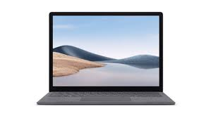
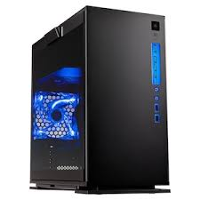
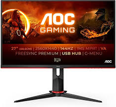
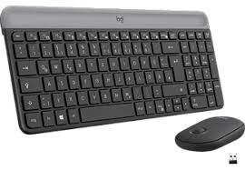
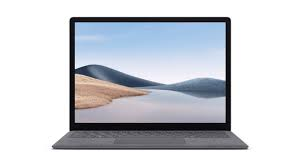
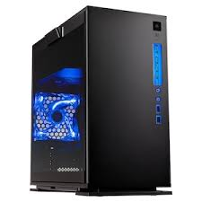
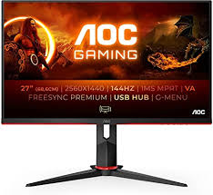
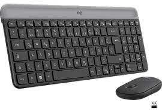

| Smartphone: | Tablet: | Laptop: | Pc: |
|---|---|---|---|
| Apple IPhone | Apple IPad | Apple Mac Book | Apple Mac |
| Samasung Galaxy | Samasung Galaxy Tab | Samsung Laptop | Samsung Monitor |
| Google Pixel | Google Pixel Tab | Google Chrome Book | Google Suchmaschine |
| Xiaomi Redmi | Xiaomi Pad | Xiaomi Book Air | Xiaomi Mini Host |
| Sony Experia | Sony Experia Tablet | Sony VAIO | Sony VAIO Desktop |
| Huawei Mate | Huawei Mate Pad | Huawei Mate Book | Huawei Mate Station X |
 







- Wasser
- Mehl
- Salz
- Hefe
Pizzateig:
- Spaghetti
- Hackfleisch
- Tomatensoße
- Parmesan
Spaghetti bolognese:
Brote:
Schwarzbrot steht für:
Roggenbrot, dunkles Brot (in Norddeutschland auch Groffbrot)
Rheinisches Schwarzbrot, aus Roggenschrot, Roggensauerteig,
Roggenflocken und Weizenmehl (im Rheinland)
Mischbrot aus Roggen- und Weizenmehl (in Süddeutschland, Österreich
und der Schweiz)
Pumpernickel, westfälisches Vollkornbrot aus Roggenschrot
Weltmeisterbrot ist eine seit 1990 in Deutschland angebotene Brotsorte. Anlass der Markteinführung war eine Werbeaktion des Bäckerhandwerks mit dem Nationalspieler und gelernten Bäcker Jürgen Klinsmann, anlässlich der Fußball-Weltmeisterschaft 1990 in Italien, bei der das deutsche Team als Weltmeister hervorging. Hierzu wurden von der Akademie Deutsches Bäckerhandwerk Weinheim Rezepte für Weltmeisterbrot sowie -brötchen geschaffen und in der Branche verbreitet. Die Weltmeisterbrote und -brötchen wurden von Jürgen Klinsmann in den Räumen der Akademie Deutsches Bäckerhandwerk Weinheim präsentiert.
Weißbrot (auch Weizenbrot) ist Brot, das aus Weizenmehl gebacken wird. Als Backtriebmittel wird vorwiegend Hefe, seltener Weizensauer verwendet. In Deutschland muss das verwendete Mehl mindestens aus 90 % Weizenmehl sein. Dieses ist glutenhaltig. Es können bis zu zehn Prozent andere Getreideerzeugnisse zugegeben werden. Brot enthält weniger als 10 Gewichtsanteile Fett und/oder Zucker auf 90 Gewichtsanteile Getreide und/oder Getreideerzeugnisse.